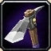

Para mais informação clique no seguinte icon:

Mineração é uma profissão de coleita de minerais de rochedos em todo o mundo. Um minerador deve aumentar seu nivel de habilidade
por coletar minerais de diferentes qualidades, e pode fundir o minerio em barras que sao consuantemente usadas por Ferraria e Engenharia. Essas barras fundidas tambem
sao utilizadas como moeda para comprar formulas do Cataclysm.